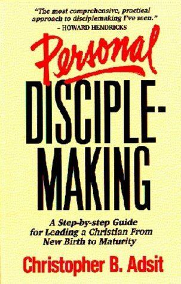

|
|  |
Personal Disciplemaking: A Step-By-Step Guide for Leading a New Christian From New Birth to Maturity
|
Christopher Adsit
|
Intergrated Resources |
384
pages |
Todd's Library
|
This book was written by Christopher B. Adsit and is published by Integrated Resources of Campus Crusade for Christ. The first eight chapters give practical help in what is involved in the discipling process. The next twelve chapters focus on initial follow-up of a new Christian -- the first twelve things you should do with a new believer in Christ. The final section helps the reader lay out a plan for a lifetime of discipling, using the Personal Disciplemaking Tool Kit. Howard Hendricks, the Chairman of the Center for Christian Leadership at Dallas Theological Seminary calls this book '...the most comprehensive, practical approach to disciplemaking I've seen to date.'
Table of Contents:
SECTION I Becoming a Disciplemaker
Chapter 1: The Priority
Why make disciples? How I got started. Personal, earthly and eternal benefits
Chapter 2: The Product
Defining the Finished Product; Learner. Doer. Person-in-process. Ever-deepening commitment. How long does it take? When are we done? Uniqueness of every individual. Disciplemaker's responsibility.
Chapter 3: The Process
Defining the Process;Overall purpose: Fulfilling the Great Commission; Going. Baptizing. Teaching.
Chapter 4: The Principal Players
Primary agencies in disciplemaking: Holy Spirit, local church, disciplemaker Three pillars of disciplemaking: prayer, relationship, content.
Chapter 5: The Pattern
The dynamics of growth Levels of growth: Baby, Child, Adolescent, Adult. Characteristics of a growing disciple at each level. Changing growth relationships between disciple and disciplemaker.
Chapter 6: The Precepts
Practical do's and don'ts from disciplemakers all over the world
Chapter 7: The Panorama
Getting the Big Picture for initial follow-up of a new Christian. Forsaking a Materials-oriented approach to disciplemaking. Embracing a disciple-sensitive, training-objective-oriented approach. The first 12 Training Objectives for a new believer.
Chapter 8: Personalizing the Program
Evaluating spiritual maturity Making a Disciplemaker's Notebook. Challenging a new Christian to discipleship.
SECTION II Making Disciples: Initial Follow-Up
Chapter 9: Training Objective #1, Assurance of Salvation
Chapter 10: Training Objective #2, Scope and Significance of Salvation
Chapter 11: Training Objective #3, Filling of the Holy Spirit
Chapter 12: Training Objective #4, Identity in Christ
Chapter 13: Training Objective #5, Basic Growth Principles
Chapter 14: Training Objective #6, Fellowship
Chapter 15: Training Objective #7, The Word
Chapter 16: Training Objective #8, Prayer
Chapter 17: Training Objective #9, Witnessing
Chapter 18: Training Objective #10, Spiritual Warfare
Chapter 19: Training Objective #11, Time Management
Chapter 20: Training Objective #12, Vision
SECTION III Making Disciples: Moving to Maturity
Chapter 21: Long-Term Disciplemaking
Strategy for overseeing a disciple's development long-term Training Objectives for the entire process of spiritual growth. Assessing disciple's Growth Profile. Developing curriculum. Evaluating Growth
|
|
|
|